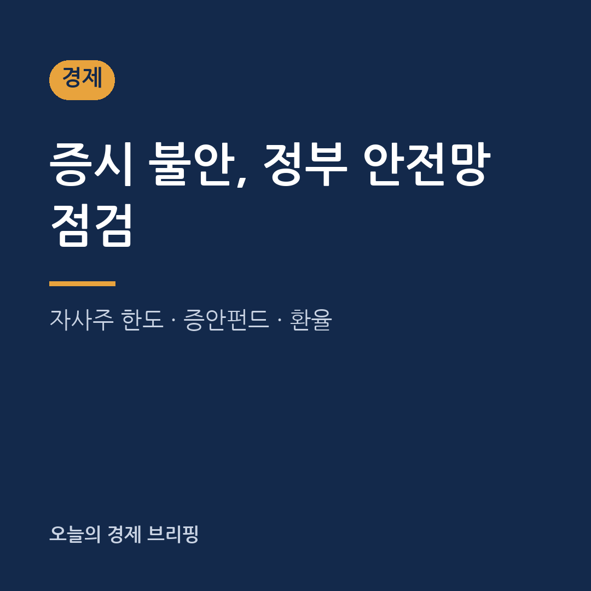
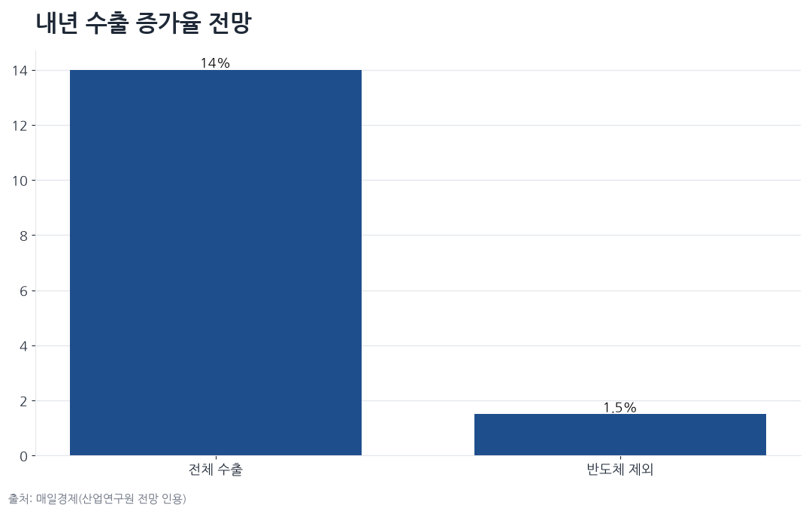

2026-11-23-1543-naver 발행 키트 · 이 페이지는 검색에 노출되지 않습니다.
제목
카테고리
경제태그
본문 (그림·표 포함)
휴대폰 블로그 앱에서는 그림이 같이 붙지 않을 수 있어요. 그때는 [글자만 복사] 후 아래 이미지를 저장해 [그래프1]·[표1] 자리에 첨부하세요.

요즘 주식 앱 열어보기가 겁나는 분들 많으시죠. 지난주 미국 증시에서 반도체가 크게 밀린 뒤라 더 그렇고요.
오늘 정부가 이런 분위기를 달래려고 여러 이야기를 한꺼번에 내놨어요. 어려운 용어가 섞여 있어서, 제가 생활 감각으로 풀어서 정리해 봤어요.
▶ 오늘 나온 소식, 딱 세 가지
첫째는 금융위원회 발표예요. 상장사가 자기 회사 주식을 하루에 사들일 수 있는 주문 한도를 3개월 동안 느슨하게 풀어 주기로 했어요.
둘째는 이형일 부총리 겸 재정경제부 장관의 발언이에요. 증권시장안정펀드(증안펀드, 증시가 급락할 때 정부와 금융권이 돈을 모아 주식을 사 주는 비상 기금) 가동 준비에 들어갔고, 이 펀드 말고도 미리 짜 둔 비상계획이 따로 있다고 했어요.
셋째는 환율이에요. 오늘 오후 3시 30분 기준 원/달러 환율은 1,345.9원으로, 전 거래일보다 9.7원 올랐어요.
▶ 자사주 한도가 풀리면 뭐가 달라질까요
자사주 매입은 회사가 자기 주식을 시장에서 사는 걸 말해요. 시장에 사는 쪽이 하나 더 생기니까 주가를 받쳐 주는 효과를 기대하는 거예요.
그동안은 하루에 살 수 있는 양에 제한이 있었는데, 이걸 3개월간 완화한 거예요. 다만 한도를 풀어 줬다고 모든 회사가 사들이는 건 아니에요. 살지 말지는 각 회사가 정하거든요.
▶ 증안펀드는 아직 '준비 단계'예요
부총리는 펀드 규모에 대해 상황을 보면서 검토하겠다는 입장이었어요. 그러니까 지금 당장 얼마가 투입된다고 확정된 건 아니에요.
뉴스 제목만 보고 "이제 정부가 주식을 사 주는구나" 하고 받아들이면 곤란해요. 가동 준비와 실제 투입은 다른 이야기예요.
오늘 나온 증시 안정 관련 소식 한눈에
| 무엇이 | 내용 | 확인할 점 |
|---|---|---|
| 자사주 매입 한도 | 상장사 1일 매수 주문 한도를 3개월간 완화 | 실제 매입 공시가 나오는지 |
| 증안펀드 | 가동 준비 착수, 규모는 상황 보며 검토 | 가동 여부와 규모 발표 |
| 원/달러 환율 | 1,345.9원, 9.7원 상승(15:30 기준) | 하루 변동보다 흐름 |
출처: 연합뉴스, 세계일보
▶ 내 지갑에는 어떤 영향이 있을까요
환율이 1,340원대에 있으면 해외여행이나 해외직구, 유학생 자녀 송금처럼 달러를 쓰는 분들은 부담이 커져요. 수입 원자재 값이 오르면 장바구니 물가에도 조금씩 영향을 줄 수 있고요.
반대로 달러를 받는 수출 기업에는 숨통이 트이는 면이 있어요. 그래서 환율은 좋다 나쁘다로 딱 자르기 어려워요.
▶ 그래도 반도체는 내년 수출의 주인공이에요
오늘 산업연구원 전망도 나왔어요. 내년 우리나라 수출이 1조 3,000억 달러를 웃돌 거라는 내용이에요. 올해보다 14% 늘어나는 수준이고, 2년 연속 1조 달러를 넘는다고 해요.
그런데 여기엔 단서가 붙어요. 반도체를 빼고 계산하면 증가율이 1.5%에 그친다는 거예요. 반도체가 수출 절반 정도를 차지한다고 하니, 증시에서 반도체가 흔들리는 게 괜히 큰 뉴스가 아니죠.

▶ 이번 주에 확인해 볼 것
자사주 한도 완화는 '할 수 있게 열어 준 것'이라서, 실제로 어떤 회사가 매입을 공시하는지 보셔야 해요. 증안펀드는 가동 여부와 규모가 공식 발표되는지가 포인트고요.
환율은 하루 움직임보다 흐름을 보는 게 좋아요. 그리고 불안할 때일수록 한 종목에 몰아서 담기보다 내 투자 기간과 감당할 손실 범위를 먼저 점검해 보세요.
▶ 한 줄 정리
정부가 안전망을 펼치는 중이지만 아직은 준비 단계이고, 내년 수출 기대는 반도체에 많이 기대 있어요. 여러분은 요즘 어떤 부분이 제일 걱정되세요? 댓글로 편하게 이야기 나눠 주세요.
출처 (본문 맨 아래에 붙여넣기 권장)
- 연합뉴스, 상장사 자사주 1일 취득 한도 3개월간 풀린다…증시 안정 차원, https://www.yna.co.kr/view/AKR20261123120600002 - 세계일보, 이형일 "증안펀드 외 컨틴전시플랜도 마련…규모는 상황 봐서", https://www.segye.com/newsView/20261123507286 - 연합뉴스, [외환] 원/달러 환율 9.7원 오른 1,345.9원(15:30 기준가), https://www.yna.co.kr/view/AKR20261123127400002 - 매일경제, 내년 수출 14% 늘어 1조3000억달러…반도체 빼면 1.5% 증가에 그쳐, https://www.mk.co.kr/news/economy/12216162